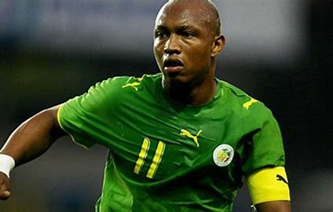

El hadji Ousseynou Diouf
Adulé par les férus du ballon rond pour son immense talent,
décrié par certains pour son caractère de «Bad boy»,
l’ancien porte-étendard de la génération dorée des Lions de la Téranga
au début des années 2000, El-Hadji Diouf, ne laisse personne indifférent.
|  |
Renseignements personnelsNom complet : El-Hadji Ousseynou Diouf Nationalité : Sénégalaise Date de naissance : 15 janvier 1981 (41 ans) Hauteur 1,80 m Lieu de naissance Dakar (Sénégal) Période pro. : 1998-2015 Poste : Attaquant |